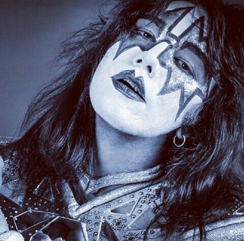

Ace Frehley - the spaceman🚀


Quem é?
Ace Frehley, nome completo Paul Daniel Frehley, nasceu em 27 de abril de 1951, em Nova York, Estados Unidos.
Ele é guitarrista, compositor e cantor e ficou conhecido principalmente por seu trabalho como guitarrista principal do KISS.
Antes do KISS
Ace começou a tocar guitarra ainda jovem e passou por diferentes bandas antes de entrar no KISS.
Ele desenvolveu um estilo próprio de tocar e ganhou experiência na cena musical de Nova York.
Entrada no KISS
Quando Paul Stanley e Gene Simmons estavam procurando um guitarrista para sua nova banda, Ace fez um teste.
Seu estilo chamou a atenção e ele foi escolhido para completar a formação junto com Paul, Gene e Peter Criss.
The Spaceman
Ace criou o personagem **The Spaceman**, também conhecido como **Space Ace**.
Sua maquiagem e seu visual eram inspirados no espaço, dando a ele uma identidade diferente dos outros integrantes.
### Importância para a banda
Ace se destacou principalmente por seus solos de guitarra e por sua maneira de tocar.
Ele também escreveu e cantou algumas músicas do KISS. Uma das mais conhecidas é **"Shock Me"**, que se tornou um de seus maiores momentos na banda.
Saída do KISS
Ace deixou o grupo em 1982 e iniciou uma carreira solo.
Posteriormente, participou da reunião da formação original em 1996 e voltou a fazer parte da história do KISS em diferentes momentos.
carreira solo
Depois de deixar a banda, Ace lançou diversos trabalhos solo e continuou se apresentando como guitarrista.
Mesmo fora do KISS, permaneceu conhecido como um dos integrantes mais importantes da formação original.
peter criss
voltar